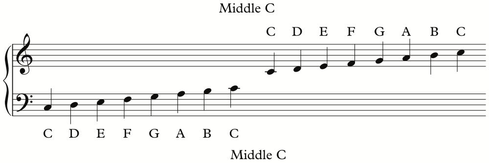
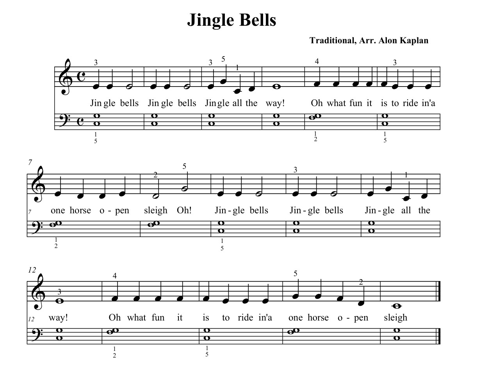

Piano basics
1. Introduction
During the past two weeks I have been trying to learn to play the piano. In the following lines I've tried to briefly explain the few things I've learned during this two weeks.
2. The keys
The basic structure of the piano is composed of a series of 7 white keys for C (Do), D (Re), E (Mi), F (Fa), G (Sol), A (La) and B (Si), with 5 black keys in between them to play the half-steps.
Keys at the left of the piano have a lower pitch, as we move to the right, the pitch of the keys is higher.
3. Steps, Half-steps & Octaves
The structure of the piano repeats itself various times.
The distance between white keys is of one tone or step, except for the distance
between B and C and the distance between E and F, which is of one semitone or
half-step.
The distance between two keys denominated with the same letter is what we call an
octave.
4. Musical notation: Tone
To represent music we make use of a score, in which notes are represented in a stave.
The stave, as can be seen consists of a series of 5 long horizontal lines in
which notes are represented.
The following is an image of the stave we normally
use to represent music we play with the piano. At the top we find the staff we play
with our right hand, corresponding with higher-pitched notes and marked with a treble
clef. At the bottom, the staff we play with our left hand, dedicated to lower-pitched
notes, marked with a bass clef at the start:
In the following image we can see represented the notes we previously showed in the piano. The C with which the stave with the bass clef ends represents the same note as the C with which the stave with the treble clef starts:
To make it clearer we inclued the piano again...
5. Musical notation: Length
Lastly, we have to ensure that we play each note during the right amount of time. In order to indicate the time during which a note has to be played, notes in the stave are represented in different ways:

6.🎄Play a Christmas song🎄
Now, with these basics you are ready to play a simple christmas song:
